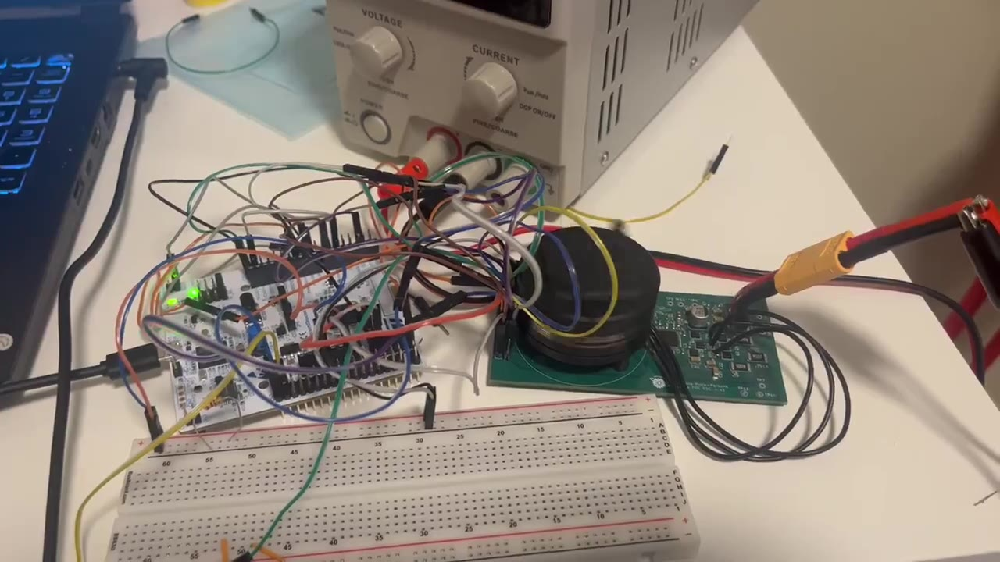
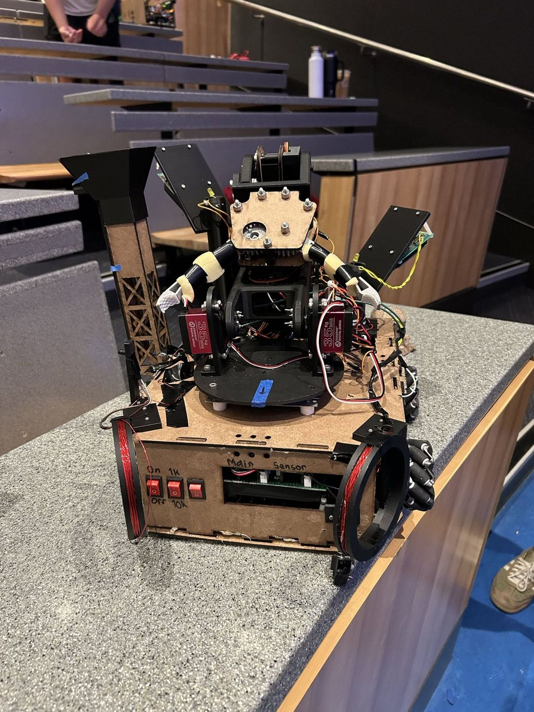

Engineering Physics · UBC co-op · Vancouver, BC
I build motor controllers, embedded firmware and robots.
Mostly STM32 and ESP32, KiCad for the boards, and a lot of control theory in between. Currently looking for mechatronics, controls and robotics co-op roles. English, Français, Deutsch.
Featured9 projects

01 · Hardware + FirmwareCustom FOC ESCField-oriented control motor driver designed from scratch. 4-layer board, closed-loop current and speed control on a gimbal motor.Read more →

02 · ENPH 253 · Robot SummerCompetition Robot: Sensor FirmwareDual ESP32-S3 mecanum robot. I wrote the sensor ESP: IR beacon detection, a metal detector, optical flow and the inter-ESP protocol.Read more →

03 · UBC SailbotUBC Sailbot: Electrical DriveElectrical Drive Team on an autonomous sailboat: IMU firmware, GNSS debugging, rudder hardware and a sensorless FOC driver.Read more →
More projects
04
Reaction-Wheel Inverted PendulumBalancing a pendulum with a spinning reaction wheel. LQR state feedback with an observer, plus a Python simulation package.
Controls
Solo
→
05
Multi-Node CAN BootloaderA custom bootloader to flash several STM32s at once over a CAN bus.
CAN · Bootloaders
In progress
→
06
Fizz DetectiveAutonomous robot competition in Gazebo: camera-based driving and clue reading with ROS 2 and TensorFlow.
ENPH 353 · ROS 2
In progress
→
07
Phased-Array Imaging SonarAn 8×8 ultrasonic phased array at 40 kHz for 3D imaging in air, on a DE10-Lite FPGA with a custom shield.
FPGA · PCB
In design
→
08
Continuous Servo Controller PCBMy first board: a motor control PCB taken from breadboard prototype to Gerbers.
Hardware
First PCB
→
09
ETF Portfolio OptimizerConstrained mean-variance optimizer with a closed-form Lagrangian solution and Kalman-filtered prices.
Quant · Software
Collab
→
Toolbox
- Embedded
- C · STM32 (CubeMX, HRTIM) · ESP-IDF · RP2040 · FreeRTOS · CAN/FDCAN · SPI · UART
- Hardware
- KiCad 4-layer · LTspice · JLCPCB assembly · logic analyzer · bring-up and rework
- Controls
- FOC · SVPWM · PID · LQR · observers · Kalman / EKF
- Software
- Python · ROS 2 · Gazebo · TensorFlow · Verilog · Git · Linux
- Mechanical
- Onshape · Revit · 3D printing
Experience
UBC SailbotElectrical Drive Team2026 – now
Motor drive, CAN and sensor firmware for an autonomous sailboat.
PomerleauConstruction InternCo-op
Temporary marine structures. Revit, Bluebeam and Primavera P6 over a four-month term.
TotalEnergiesResearch Intern, FranceInternship
Helped develop and maintain an internal hazardous-chemical classification tool; tested it and reported bugs to IT.